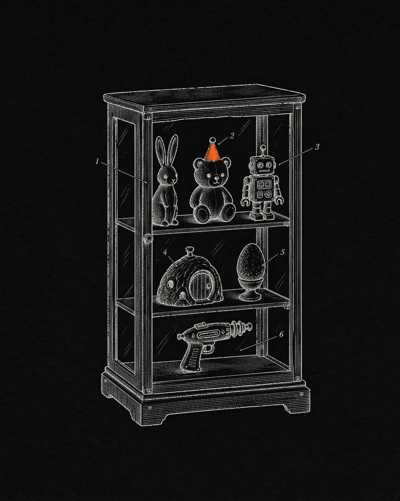

Non-Fungible Labs · 2021 — 2023
FLUF World & its collections
From 10,000 sold-out rabbits to Burrows with a Snoop Dogg studio — the mints, claims and on-chain mechanics behind one of the early NFT ecosystems.
- Role
- Chief Technology Officer
- When
- Aug 2021 — May 2023
- Chains
- Ethereum · The Root Network
- Built with
- Solidity · ERC-721 / ERC721A · ERC-1155 · Merkle proofs · ECDSA · Substrate · Rust · XRPL

Context
FLUF World launched in August 2021 with 10,000 Flufs — 3D rabbits on Ethereum that sold out in about 40 minutes at 0.09 ETH. Over the next two years it grew into an ecosystem of interlocking collections: companions, homes, music and gear, each one built around the holders of the last.
I joined Non-Fungible Labs as Chief Technology Officer that month and led engineering until 2023 — through the company’s merger into Futureverse in December 2022.
The challenge
Every drop was a one-shot, high-stakes event. Thousands of collectors hit a contract in the same minutes; every new collection had to recognise holders of the previous ones; some drops were free claims, some paid, some staged over days; and gas costs made even small interactions — like renaming an NFT — painful.
What I did
- Shipped the smart contracts behind dozens of mints, from Party Bears and Burrows to Scenes & Sounds and Buzzies — in an ecosystem that raised 9,000+ ETH in primary sales and has traded 83K+ ETH ($228M) on OpenSea.
- Ran the mint mechanics across the collections — free claims for holders, staged allowlist windows and signature-gated sales — so each new drop rewarded holders of the last.
- Distributed high-value airdrops to thousands of holders with Merkle proofs, and used ECDSA signatures for gas-free interactions such as renaming.
- Built custom Discord bots to take third-party bot risk out of the community, and recruited, mentored and led a team of 20+ Web3 developers.
- Led development on The Root Network, the Substrate-based layer 1 with native EVM that FLUF World architected in partnership with Ripple.
The collections
| Collection | Launched | Supply | How it minted | Standard | Raised in the mint* | OpenSea volume† | Notes |
|---|---|---|---|---|---|---|---|
| Flufs | Aug 2021 | 10,000 | Allowlist presale, then 0.09 ETH public — sold out in ~40 min | ERC-721 | 889 ETH$2.68M | $138.1M | The genesis 3D rabbits, with soundtracks by Tom Lee. |
| Thingies | Oct 2021 | 9,590 | Free claim, one per Fluf | ERC-721 | Free | $16.6M | AI-artist spiders running ASM’s AI. |
| Scenes & Sounds | Oct 2021 | 99 assets · ~55K editions | Sold in The Underground store | ERC-1155 | 280 ETH$842K | $5.1M | Music and backgrounds that lock into a Fluf — by Mike Shinoda, Young & Sick, Tom Lee and more. A charity scene for Ukraine raised 80 ETH on-chain. |
| Party Bears | Dec 2021 | 9,669 | Two-stage signed mint, 0.09 ETH | ERC-721 | 870 ETH$3.41M | $26.8M | Created with Shadows Interactive; includes a one-of-one Snoop Dogg bear. |
| Burrows | Jan 2022 | 10,500 | One per token held, 0.22 ETH, in four 24-hour holder windows | ERC721A | 2,300 ETH$7.02M | $24.6M | Homes for Flufs, built with Beyond. A “Studio Snoop Dogg” tier — Snoop’s Burrows were auctioned for NZ$1M+ for Auckland City Mission. |
| FLUF Haus | Feb 2022 | 1,500 | Two 0.05 ETH sales, February and March | ERC-1155 | 47 ETH$143K | Delisted | Tied to FLUF Haus, FLUF World’s live events — including SXSW 2022. |
| Seekers | Mar 2022 | 47,895 | “Community-determined supply”, decaying from 50,000 — sold out in 77 min | ERC-721 | 4,633 ETH$15.27M | $10.7M | Sylo’s genesis collection, launched inside FLUF World — most of the proceeds went to Sylo. |
| EGGs | Apr 2022 | 10,000 | Free claim, one per Fluf | ERC721A | Free | $2.8M | The first step toward Gen-2 “Fluflets”. |
| Dr. Grordbort’s Rayguns | Apr 2022 | 2,748 of 3,003 | Free Merkle allowlist claim; the paid stage never opened | ERC721A | Free | $1M | On Wētā Workshop’s IP. |
| Buzzies | May 2022 | 12,662 | Free signed claim for Party Bear holders | ERC721A | Free | $2M | Queen-bee companions for Party Bears. |
| Total | Ten collections, ten paid sale contracts | 9,020 ETH$29.4M | $227.7M83,263 ETH | ||||
* ETH paid into each collection’s sale contracts during its primary mint, summed from on-chain transactions; USD at each day’s ETH price. I didn’t deploy the genesis Flufs contract. † All-time OpenSea volume, read October 2026 — includes trading after 2023.
What each mint raised
How it fits together
- 01MintEach new collection opens in staged windows for existing holders.
- 02ClaimFree claims and Merkle-proof airdrops reward the ecosystem’s holders.
- 03SignECDSA signatures gate sales and make actions like renaming gas-free.
- 04CombineScenes & Sounds lock music and backgrounds into a Fluf; Burrows give them homes.
- 05ScaleThe Root Network: a Substrate L1 with native EVM and XRP as gas, bridged to XRPL and Ethereum.
Outcome
- 9,020 ETHraised in primary sales — about $29.4M at the time
- $228Mtraded on OpenSea across nine collections — 83K+ ETH
- 30K+wallets have held a FLUF World NFT
- 13K+wallets minted, 11K+ of them in paid sales
- ~40 minfor 10,000 Flufs to sell out
- NZ$1M+raised for Auckland City Mission with Snoop Dogg
In December 2022, Non-Fungible Labs joined the eight-company merger that formed Futureverse, with more than 300 people.
“He has executed some of the most flawless mints ever done in digital collectibles, including his contribution to the @Flufworld ecosystem!”
Sources
- FLUF World’s 3D rabbits total US$42M in sales in five weeksStockhead · 2021 ↗
- MilestonesFLUF World (archived) ↗
- Thingies: meet the newest creature of FLUF WorldFLUF World · Medium ↗
- FLUF World × Beyond: official Burrows mint guideFLUF World · Medium ↗
- Beyond, FLUF World and Snoop Dogg raise over $1M for Auckland City MissionBeyond ↗
- The Seekers are comingSylo · Medium ↗
- Ripple and FLUF World announce partnership, introduce The Root NetworkRipple · Jun 2022 ↗
- Futureverse announces merger of eight Web3 companiesPR Newswire · Dec 2022 ↗
- Burrows contractEtherscan ↗
- Party Bears contractEtherscan ↗
- Seekers contractEtherscan ↗
- Charity scene for Ukraine: mint guideFLUF World · Medium ↗
- FLUF World unveils FLUF Haus: SXSW EditionSXSW · Mar 2022 ↗
- Walker World welcomes Joey as Head of EngineeringWalker World · X ↗